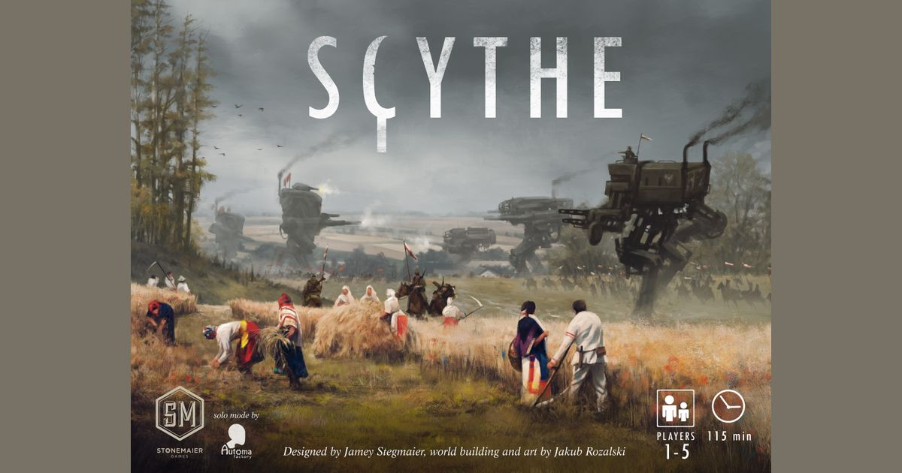
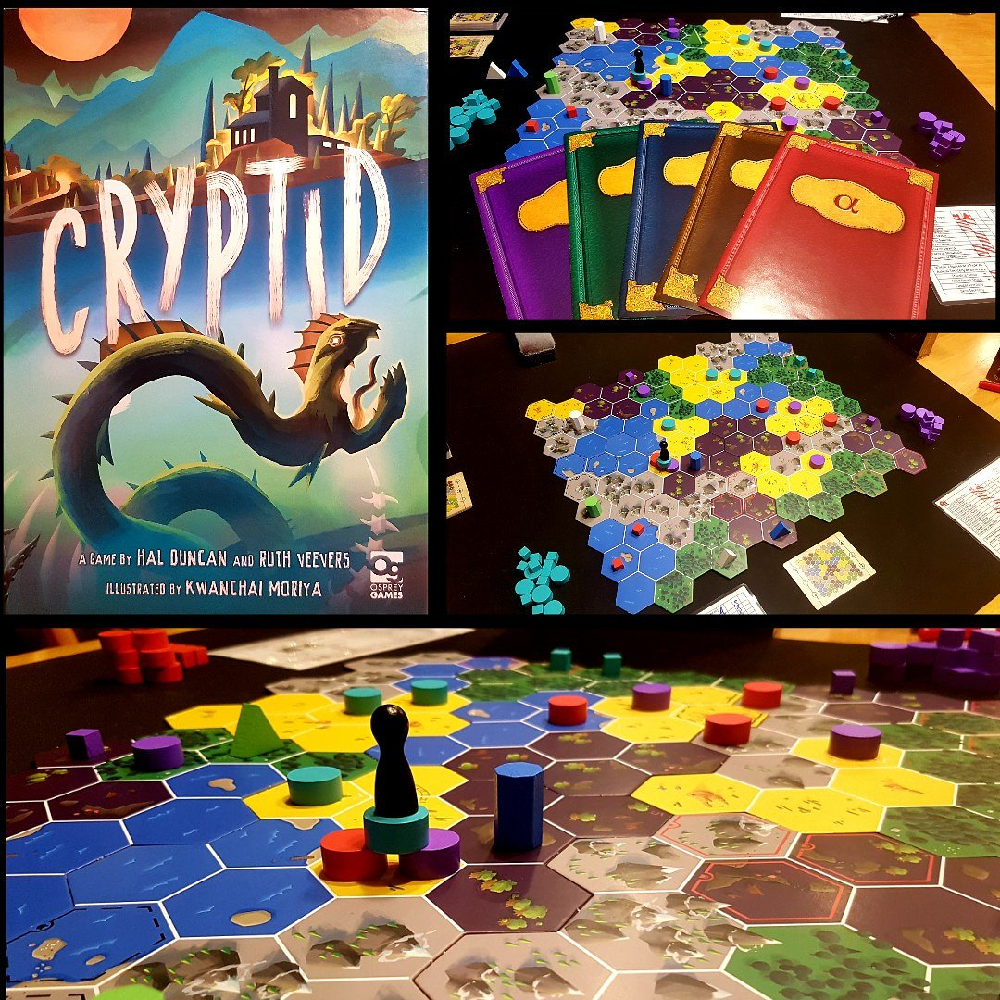

▲▽▲▽▲▽▲▽▲▽▲▽▲▽▲▽▲▽▲▽▲▽▲▽▲▽▲▽▲▽▲▽▲▽▲▽▲▽▲▽▲▽▲▽▲▽▲▽▲▽▲▽▲▽▲▽▲▽▲▽▲▽▲▽▲▽▲▽▲▽▲▽▲▽▲▽▲▽▲▽▲▽▲▽▲▽▲▽▲▽
Scythe™: A God Amongst Games 💥
Scythe is my favorite game ever. It's a game that not only has really crunchy mechanics and real war-like game play, but the art and components are absolutely stunning. My favorite part? The creator for this game, Jamie Steigmaier, saw the art originally online and then decided to make a game INSPIRED by the art! How neat is that!!!
▲▽▲▽▲▽▲▽▲▽▲▽▲▽▲▽▲▽▲▽▲▽▲▽▲▽▲▽▲▽▲▽▲▽▲▽▲▽▲▽▲▽▲▽▲▽▲▽▲▽▲▽▲▽▲▽▲▽▲▽▲▽▲▽▲▽▲▽▲▽▲▽▲▽▲▽▲▽▲▽▲▽▲▽▲▽▲▽▲▽
Cryptid™: Monsters of the Mind 🧜
Cryptid is my SECOND favorite game ever. This is a mind bending hidden information and deduction game. Essentially you and your friends are all searching for a cryptid, let's say Mothman for funnies. Each of your party members each know a fact about Mothman, one person knows Mothman HATES water, so he won't be near the lake. Another person knows Mothman absolutely loves craft beer, so he'll probably be within a mile of a local brewery, and so on. The object of the game? Each person has to give a clue as to what they know about the cryptid, and if you're the first to figure out where the cryptid is? You are victorious! But be warned: your brain may melt after this game, it's what i like to call a "brain burner"!
▲▽▲▽▲▽▲▽▲▽▲▽▲▽▲▽▲▽▲▽▲▽▲▽▲▽▲▽▲▽▲▽▲▽▲▽▲▽▲▽▲▽▲▽▲▽▲▽▲▽▲▽▲▽▲▽▲▽▲▽▲▽▲▽▲▽▲▽▲▽▲▽▲▽▲▽▲▽▲▽▲▽▲▽▲▽▲▽▲▽
Fake Artist Goes to New York™: Imposter Syndrome The Game! 🐍

This game is as simple as apple pie, but dang does it garner a lot of laughs. The object of this game? KILL. THE. FAKER. Not really, but sort of. Essentially, you and your friends are all given a prompt on what to draw, such as this picture we'll say platypus! Each person is going to contribute one piece to this picture without lifting their marker. The catch? Everyone knows the prompt but one person! The FAKER! The fake needs to convince everyone they're real or else they will lose their fabulous studio NY apartment in Manhattan. The rest need to weed out the fake and send them back to the sticks. Because they're snobby and mean I guess, I dunno.